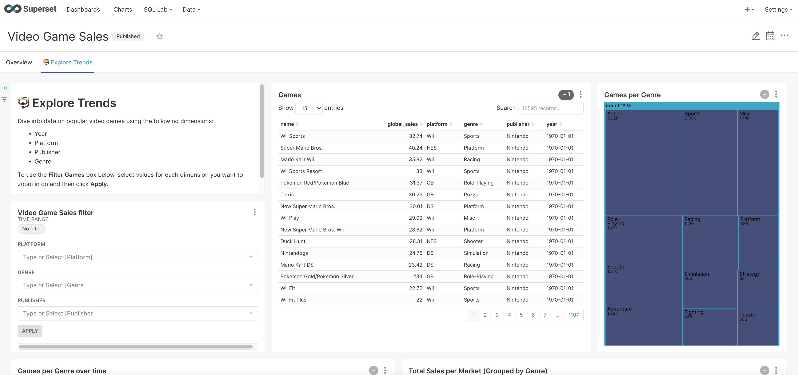
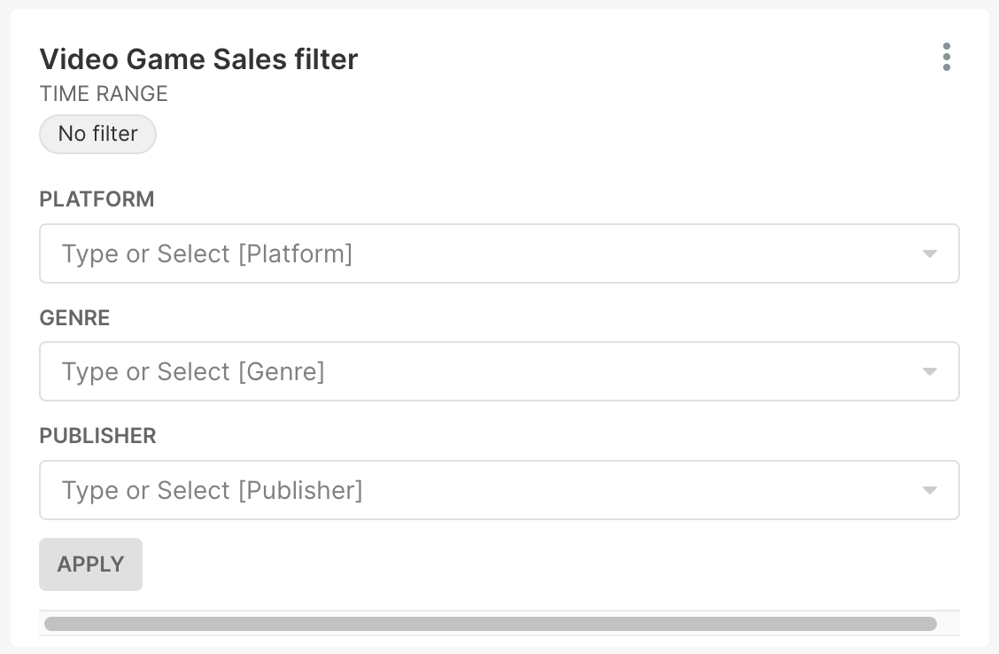
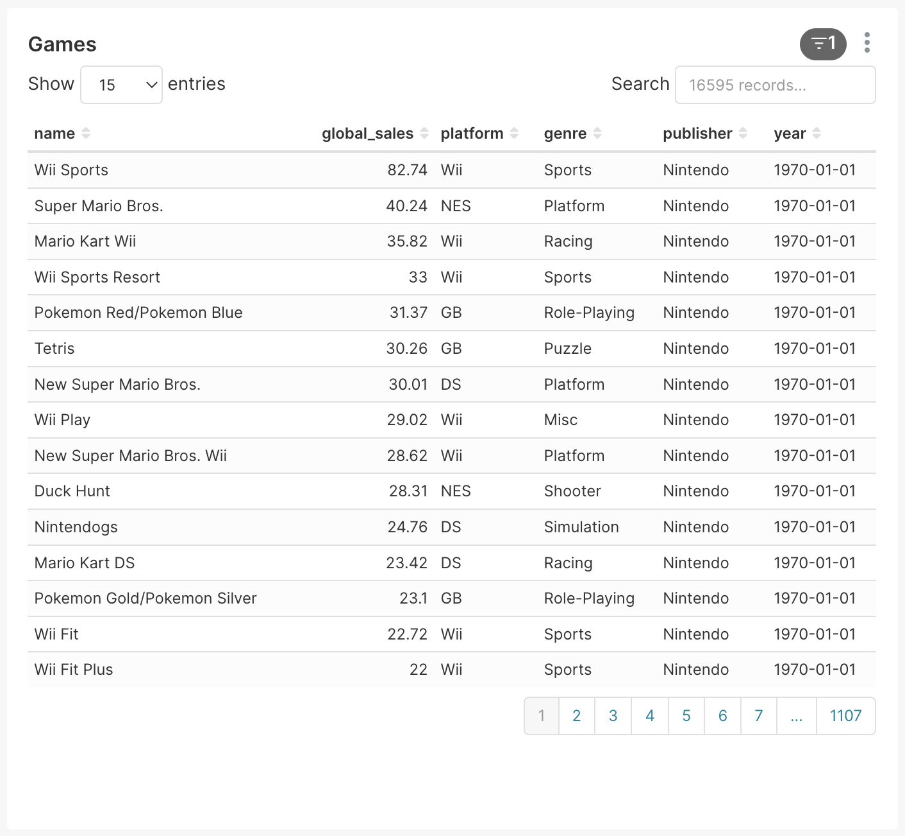
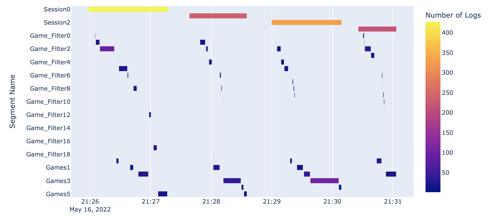

Example Usage of Distill
In this example, we run through a simulated user experiment using UserALE data generated within an instantiation of Superset. This data reflects four simulated user sessions in which the user performs three tasks within the Video Game Sales example dashboard:
Filter the Video Games Sales by Wii, Racing, and Nintendo.
Find Mario Kart in the list of games.
Determine the difference in global sales between the 3DS game Nintendogs + cats and Wii Sports.
A screenshot of this Superset dashboard can be seen below:
{kind=link}
The data of these four sessions is captured in a JSON file entitled task_example.json. In the following example, we will:
Show how to use Distill’s Segmentation package to create useful
Segmentsof data.Visualize
Segmentobjects using timeline/gantt and digraph visualizations.Compare each of these user sessions through the investigation of edit distances.
Note: The data utilized in this example was not data collected in any user study. Rather this data is simulated through developer interactions with the Superset dashboard.
Imports
The first step in this example is to import all of the packages that we need. We do this with the code below:
import datetime
import distill
import json
import networkx as nx
import os
import pandas as pd
import plotly.express as px
import re
Processing and Segmentation
Now that we have imported all of the necessary packages, we can begin to process and segment the data. This can be done
by creating Segment/Segments objects. These objects will help us to visualize the data and understand processes
that the users took to perform each of the three tasks.
Processing the JSON File
The setup function is used to convert a JSON file into the required format for segmentation. It also allows us to
assert the date format that we want to use for our analysis (i.e., integer or datetime). Below we define this
function:
def setup(file, date_type):
with open(file) as json_file:
raw_data = json.load(json_file)
data = {}
for log in raw_data:
data[distill.getUUID(log)] = log
# Convert clientTime to specified type
for uid in data:
log = data[uid]
client_time = log['clientTime']
if date_type == "integer":
log['clientTime'] = distill.epoch_to_datetime(client_time)
elif date_type == "datetime":
log['clientTime'] = pd.to_datetime(client_time, unit='ms', origin='unix')
# Sort
sorted_data = sorted(data.items(), key=lambda kv: kv[1]['clientTime'])
sorted_dict = dict(sorted_data)
return (sorted_data, sorted_dict)
Using this function, we can process the UserALE data and create Segment objects that represent each of the four user
sessions. This is shown below through the utilization of the generate_collapsing_window_segments function.
data_many_session = setup("./data/task_example.json", "datetime")
sorted_dict = data_many_session[1]
# Create segments based on sessionID
segments = distill.Segments()
session_ids = sorted(distill.find_meta_values('sessionID', sorted_dict), key=lambda sessionID: sessionID)
for session_id in session_ids:
segments.append_segments(distill.generate_collapsing_window_segments(sorted_dict, 'sessionID', [session_id], session_id))
# Improve readability of Segment names
for index in range(len(segments)):
segments[index].segment_name = "Session" + str(index)
Below we list out each of the created Segment objects along with their number of logs and start times.
Session0 Length: 427 Start Time: 2022-05-16 21:25:57.935000
Session1 Length: 236 Start Time: 2022-05-16 21:27:38.283000
Session2 Length: 332 Start Time: 2022-05-16 21:28:59.774000
Session3 Length: 219 Start Time: 2022-05-16 21:30:25.633000
Further Segmentation of Sessions
Now that there are Segment objects that represent each session, let’s write the Segment objects. This will allow
us to further segment these session segments to analyze the activity of the user during each of these sessions. This
can be done with the following code:
segment_names = [segment.segment_name for segment in segments]
start_end_vals = [segment.start_end_val for segment in segments]
segment_map = distill.write_segment(sorted_dict, segment_names, start_end_vals)
We can now generate Segments objects within each of those session segments that represent user interactions on two
different elements of the Superset dashboard.
The first element involves user interactions with the filter window that filters the list of video games (shown in the screenshot below). The element in the path that represents these interactions is “div.filter-container css-ffe7is.”
{kind=link}
The second element involves interactions with the actual list of video games (shown in the screenshot below) represented by the “div#chart-id-110.superset-chart-table” path element.
{kind=link}
By creating Segment objects that show user interaction on these two windows, we can get an understanding of how the
user is using the Superset dashboard to complete the three tasks. We create these Segment objects with the
following code:
session_0_segments = distill.generate_collapsing_window_segments(segment_map['Session0'], 'path', ['div.filter-container css-ffe7is'], "Game_Filter")
session_1_segments = distill.generate_collapsing_window_segments(segment_map['Session1'], 'path', ['div.filter-container css-ffe7is'], "Game_Filter")
session_2_segments = distill.generate_collapsing_window_segments(segment_map['Session2'], 'path', ['div.filter-container css-ffe7is'], "Game_Filter")
session_3_segments = distill.generate_collapsing_window_segments(segment_map['Session3'], 'path', ['div.filter-container css-ffe7is'], "Game_Filter")
session_0_segments.append_segments(distill.generate_collapsing_window_segments(segment_map['Session0'], 'path', ['div#chart-id-110.superset-chart-table'], "Games"))
session_1_segments.append_segments(distill.generate_collapsing_window_segments(segment_map['Session1'], 'path', ['div#chart-id-110.superset-chart-table'], "Games"))
session_2_segments.append_segments(distill.generate_collapsing_window_segments(segment_map['Session2'], 'path', ['div#chart-id-110.superset-chart-table'], "Games"))
session_3_segments.append_segments(distill.generate_collapsing_window_segments(segment_map['Session3'], 'path', ['div#chart-id-110.superset-chart-table'], "Games"))
Now, we append each of those newly generated Segments objects to the overarching segments variable. This will create
one large Segments object that contains all Segment objects from all sessions.
segments.append_segments(session_0_segments)
segments.append_segments(session_1_segments)
segments.append_segments(session_2_segments)
segments.append_segments(session_3_segments)
Visualization of Segment Objects
To understand these Segment objects better, we can visualize them. First, we will visualize them using Plotly’s
timeline function, then we will analyze them by creating DiGraphs.
Visualization with Plotly’s Timeline
The following code can be used to define a function that will display a Plotly timeline of each of the Segment
objects:
def display_segments(segments):
segment_list = []
for segment in segments:
if not isinstance(segment.start_end_val[0], datetime.datetime) or not isinstance(segment.start_end_val[1], datetime.datetime):
new_segment = distill.Segment()
new_segment.segment_name = segment.segment_name
new_segment.num_logs = segment.num_logs
new_segment.uids = segment.uids
new_segment.generate_field_name = segment.generate_field_name
new_segment.generate_matched_values = segment.generate_matched_values
new_segment.segment_type = segment.segment_type
new_segment.start_end_val = (pd.to_datetime(segment.start_end_val[0], unit='ms', origin='unix'), pd.to_datetime(segment.start_end_val[1], unit='ms', origin='unix'))
segment_list.append(new_segment)
else:
segment_list.append(segment)
new_segments = distill.Segments(segments=segment_list)
distill.export_segments("./test.csv",new_segments)
df = pd.read_csv("./test.csv")
fig = px.timeline(df, x_start="Start Time", x_end="End Time", y="Segment Name", color="Number of Logs")
fig.update_yaxes(autorange="reversed")
os.remove("./test.csv")
fig.show()
Using this code, we can visualize the Segment objects we created.
display_segments(segments)
This will produce the following timeline graph:
{kind=link}
This graph shows the number of logs in each Segment while also showing the length of time each Segment
represents. We can also begin to understand some of the interactions that each user had with the dashboard by
analyzing the Segment objects that exist within each overarching session Segment.
Visualizing User Workflows with DiGraphs
Another way we can visualize user workflows is through the creation and analysis of DiGraphs. The function below
(draw_digraph) draws a DiGraph based on the passed in Segments object. These graphs are colored in such a way
that interactions with the video game filter are colored in green while the interactions with the list of video games
are colored in blue.
def draw_digraph(segments):
nodes = sorted(segments.get_segment_list(), key=lambda segment: segment.start_end_val[0])
edges = distill.pairwiseSeq(segments.get_segment_list())
# Set coloring of graph based on element in Superset dashboard
color_map = []
for segment in segments:
if re.match("Game_Filter\S*", segment.segment_name):
color_map.append('green')
else:
color_map.append('blue')
graph = distill.createDiGraph(nodes, edges)
nx.draw(graph, node_color=color_map)
return graph
We can now use this function to create DiGraphs of each of the user sessions.
Graph 0 - Session 0
G0 = draw_digraph(session_0_segments)
{kind=link}
Graph 1 - Session 1
G1 = draw_digraph(session_1_segments)
{kind=link}
Graph 2 - Session 2
G2 = draw_digraph(session_2_segments)
{kind=link}
Graph 3 - Session 3
G3 = draw_digraph(session_3_segments)
{kind=link}
By analyzing these graphs, we can understand the general interactions that users had with the two elements of the Superset dashboard. For instance, in each of these graphs, the user starts by filtering the dashboard. Based on the tasks that the user is meant to perform, this makes a lot of sense since the most logical way to filter the dashboard is through the filtering window. However, these graphs begin to differ in the amount of interactions that the user has with the actual list of video games. While users always follow the workflow: filter –> game list –> filter –> game list, there are occasions when the user interacts more with the game list than others.
Measuring Similarity with Edit Distance
One way to understand the differences between the previously generated DiGraphs is to look at their edit distance. Edit
distance is a metric that measures how many distortions are necessary to turn one graph into another, thus measuring
similarity. For instance, taking the edit distance between a graph and itself yields an edit distance of 0, since the
graphs are exactly the same. We can show this using NetworkX’s graph_edit_distance to calculate the edit distance.
Input
nx.graph_edit_distance(G0, G0) # 0.0
Let’s now calculate the edit distances between each graph to calculate an average. Note, however, that when we try to
calculate some edit distances, we run into a bit of an issue. Since edit distance is a computationally complex problem,
it can take a long time and require large amounts of computational resources to find an exact answer. To simplify this
problem, we can use NetworkX’s optimize_graph_edit_distance function which will create an approximation of the graph
edit distance. For the following calculations, we use the function required depending on the length of time
graph_edit_distance takes in each circumstance.
Input: G0, G1
next(nx.optimize_graph_edit_distance(G0, G1)) # 32.0
Input: G0, G2
next(nx.optimize_graph_edit_distance(G0, G2)) # 34.0
Input: G0, G3
next(nx.optimize_graph_edit_distance(G0, G3)) # 38.0
Input: G1, G2
nx.graph_edit_distance(G1, G2) # 2.0
Input: G1, G3
next(nx.optimize_graph_edit_distance(G1, G3)) # 18.0
Input: G2, G3
nx.graph_edit_distance(G2, G3) # 4.0
Using these outputs we can now calculate the average edit distance with the following calculation:
(32.0 + 34.0 + 38.0 + 2.0 + 18.0 + 4.0)/6 # 21.33
This shows that the average edit distance between each of these session DiGraphs is 21.33.